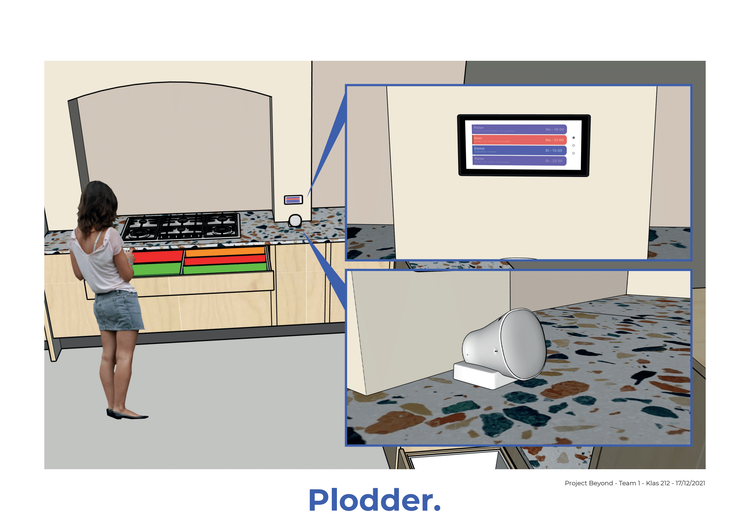
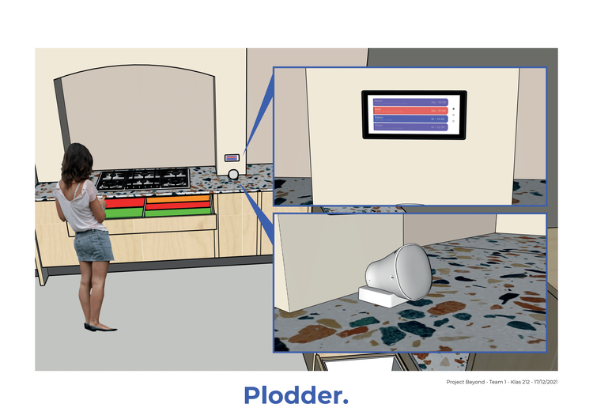

Project Ploddr
UX/UI, arduino, user research
What was the project about?
The goal of this project was to reduce a common frustration when living together with others, for example the dirty dishes that your roommate leaves in the sink. The design challenge we worked on was: "How can we improve the division of tasks for dishwashing in student houses?"
Our solution is Ploddr, a digital assistant who helps you communicate with your roommates about the cleaning schedule. 🤖🧽
To get to this solution, our team used research methods like interviews, literature study and co-creation. Based on this research we came up with a product to reduce students' frustration in the kitchen. We also build and tested a prototype made with Arduino, and we used AdobeXD to make a VA prototype that responds to certain phrases. You can read more about our process below, or download our design rationale.
During this project we were also challenged to look beyond the web and design a product that enables multimodal interaction. This allows the user to communicate with a product in multiple ways, using touch, speech, movement, sounds, light, color, etc.
 

Research phase
Our team started this project by investigating the current situation.
Our first step was to conduct 1-on-1 interviews with 3 participants. We wanted to hear their perspective on the problem. From their experience, their reason for not doing the dishes is usually because they are in a rush, they forget or because nobody in the house feels responsible.
We wanted to hear some more opinions so we decided to go outside and do street interviews with 10 random participants. Here we saw that there are large differences between different types of households. This was reason for us to choose one type of household to focus on for this project; we decided to focus on student housing, because from the interviews we did the problem seemed to be the biggest there.
Last but not least, we held a survey asking students what their biggest irritation was, read articles about the subject, and observed and photographed 3 different kitchens for a week to see when and how the dirty dishes appeared.
Ideation phase
Based on our research, we have written the following requirements for our solution:
- The solution should reduce irritation in the morning.
- The solution must ensure that every housemate knows what is expected of them.
- The solution must ensure that there is always enough space to cook.
- The solution should remind you when there are still dishes to be done.
- The solution should make sure that the kitchen is tidy.
To turn these requirements into solutions, we have used the techniques morphological map, brainstorming and sketching. Three ideas we came up with are:
- There could be a robot that points to someone every night after dinner to do the task, this way everyone gets a turn and there is no discussion.
- There could be a special place where the dirty dishes are allowed to stand so they're out of the way. The fuller this place becomes, the more visual feedback it provides.
- There could be a planning application that sends housemates reminders to do the task, so they won't forget.

Concept phase
This is when we came up with the concept of Ploddr: a kitchen virtual assistant who helps roommates to schedule the washing-up task within their busy lives.
This concept consists of a virtual assistant, planning display and a smart LED light installation. You can ask the virtual assistant whose turn it is to wash up today. A light installation for the kitchen cupboard measures whether the dishes have been cleaned up and provides feedback via LED lights.
These different types of input and output make Plodder a multimodal solution. Users can operate Plodder how it suits them best. You can contact Plodder via speech by talking to the virtual assistant, you can view the display or you can just start cleaning up the kitchen, on which you get immediate visual feedback via color and light.
In the short term, Plodder is a useful reminder of your task so that you don't forget it. But in the long run, via the dashboard, Plodder can also give more insight into structural problems with the cleaning schedule, so that you can easier talk about it with your housemates.
Testing phase
To test this concept we developed a prototype using an Arduino, some lights, conversation cards and a speaker. One thing we wanted to know was: Which parts of this concept are essential, and which parts are the least important? For example, we tested what questions users were most likely to ask the VA.
First we did an user test, testing our prototype with 7 students. These participants said that the lights give a feeling of satisfaction but that they were not essential for the success of the product. They found the speaker the most interesting way to give feedback to the user.
We also wanted to validate our concept with members of the target user group. We found a student house with 8 residents who were all willing to participate. During this session we first let the participants give their own input on what they found important, using co-creation methods like cards sorting, letting them brainstorm together about prompts, and letting them give us a house tour. After this we finally revealed our prototype and asked their opinion. They told us that they found the lights very fun and motivating, but they didn't care much for a planner. The most important thing to them was their relationship with their housemates and not having any fights.
We received mixed opinions from users about which part of our solution they found the most useful. Because every household is different, we decided to offer our final product as a base product (VA + planning display) with 2 extra's (smart lights / smart lights cupboard) that you could get to expand the experience. As we learned during our tests, some people might not want the smart lights because of sustainability reasons, or because they have no space for them at home.
Presenting the product
Take a look at our final product!